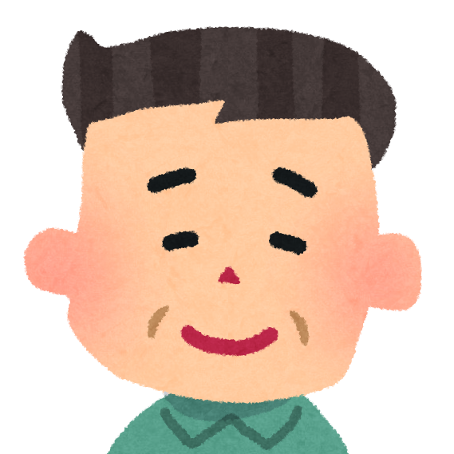
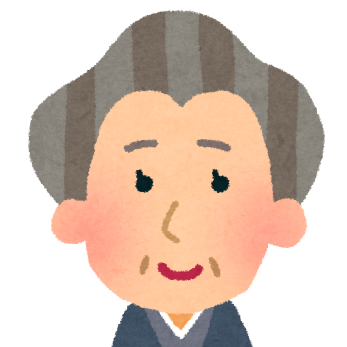

患者の家族は、このような経験をすることがあります。

ケース１：６０代男性、若年性認知症
【足の切断の決定】
糖尿病で左足を切断する必要が出てきました。
本人は若年性認知症で意思確認ができないため、医師は妻に切断するか、切断する場合はどこから切断するかを相談しました。「先生の家族だったらどうしますか？」と質問したりして、切断後のことも十分説明を受けながら膝上から切断することを決めました。
 医師に質問をし、十分な説明を受けて医療行為を決断した。
医師に質問をし、十分な説明を受けて医療行為を決断した。

ケース２：９０代女性、アルツハイマー症
【食事の楽しみか窒息の危険か】
飲み込みが悪くなり、胃ろうを作るかどうかを検討しました。家族からは、本人がもともと食事を楽しみにしているところがあったため、できるだけ口から食べる楽しみを残してほしいという希望を出しました。医師は言語聴覚士と相談し、胃ろうはせず食事を継続することにしました。
家族から医師に希望を出し、医療行為を決断した。
医師とよく話し合うことは、納得のいく医療につながります！